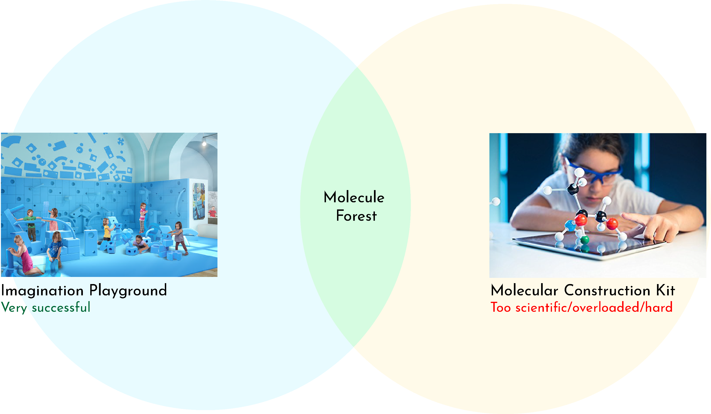

Overview
The Problem
The Children's Museum of Atlanta has a lot of great exhibits in a vast variety of learning concepts, but their new area in science and engineering was lacking in engaging exhibits. The CMoA asked Georgia Tech students to design and create museum exhibit concepts that embodied curiosity, creativity, and STEM learning concepts to enhance the new science and engineering area of the museum.
The Solution
Our team designed the Molecule Forest: an interactive exhibit that subtly instills broads concepts of atoms and molecule creation. The exhibit is mostly designed to create a collaborative medium for children to practice motor skills, teamwork skills, critical thinking skills, all while learning a more complex concept in science.
My Roles
• Visual Designer
• Research Analyst
My Team
• Me
• Mika Munch
• Chris Chen
Methods Used
• Concept Research
• Iterative Design
• Usability Testing
Research Process
Visit to Children's Museum of Atlanta
As a part of our initial research, we made a visit to the Children's Museum of Atlanta to talk with their executives about the museum, their needs, and their pain points. We arrived before the museum was open to discuss the exhibits and take pictures, and then we stayed when the museum opened to observe how the museum guests interacted with their current exhibits. We took notes about what we saw was working and what was not working with the exhibits in the museum. This would help inform our design decisions later.

Largest takeaways from the visit:
• Children engaged more heavily with the tangible
• Most popular exhibits were entirely immersive or embodied
• Children were not as engaged in single-process actions
• Children played while not realizing they were learning
Design criteria established from takeaways:
• The exhibit needs to engage multiple kids
• Exploratory play/constructionist most efficent to establish immersion
• Fun materials
• Creative with few constraints
• Open-ended/not single-process
• Element of feedback/surprise
• Subtle learning goals
• Entirely embodied interaction
Concept Creation
After establishing our takeaways and design criteria from the research gained at the museum visit, we landed on our concept for our new exhibit.
We combined these two ideas to create something that would appeal to younger children while gently teaching them a STEM concept at the same time. Here are the ideas we had in mind when beginning the design process:
• Giant molecule construction kit
• Larger than life
• Soft, colorful
• Introduce molecular geometry
• Manipulable environment
• Social/behavioral, teamwork
Design Process
Iteration 1: Rough Prototyping
We first designed a rough prototype of what the Molecule Forest would potentially look like and materials the exhibit would include. We then got feedback on this concept through our peers and the Children's Museum of Atlanta.
Feedback from Iteration 1:
• We needed to be cautious of the materials we used to create the exhibit. Since it is targeted towards small children, we needed to reinforce harder materials, like pvc pipes, with soft materials.
• The half spheres at the bottom needed to be a lot larger to encapsulate the "larger-than-life" feel that a playground should give.
• Adding variation in color would help establish molecular patterns and creatively putting pieces together.
Iteration 2: Museum Usability Testing
~50Participants (children + parents)
3Hours in the museum
Once we grew our concept into a workable prototype, it was time to test it at the museum. With the help of museum employees, we were able to set up our exhibit on the ground floor, where it would gain traction with the guests. We could take notes and videos with permission from museum managers and by informing the guests.
The Good
Our exhibit was very well received. Children loved playing with the materials that they were familiar with, especially the pool noodles. Children were satisfied when they were able to place pool noodles onto the pvc pipes, and eventually make connections with other building blocks. Children even made very interesting structures, and we were able to take great notes away with us about the different ways that children interact with the exhibit, including playing with solely the noodles, connecting 2 base structures together, and even intertwining noodles and structures together to create something more complex.
The Bad
Despite this great reception, our design had some flaws. The bases of the molecules (made out of foam half-spheres) were secured to the gym mats using duct tape only on the outer side. Because of this, children found it very easy to uproot our bases and run off with the pieces. Children also thought that the pvc pipes were meant to be pulled out of the bases, and some children succeeded in pulling these out as well, despite our glue reinforcements. A concern we had initially going in to testing was that children would get hurt by falling on the bases with the pvc pipes sticking out. Unforatuntely one child fell on one of these bases, but was unharmed. We had to take these concerns into consideration in our next round of testing.
Feedback from Iteration 2:
• Durability was a major concern. One way we could solve this was to secure the bases using duct tape on the undersides of the spheres, not on the top. This way it will be more aestetically pleasing and more secure.
• Children loved it when they reached that 'aha' moment on connecting the bases together. We would create an additional way for children to get positive feedback when connecting the bases to the pool noodles. One way is by having lights in the bases or pool noodles that light up when there is a connection.
• We needed to think about the scale of the exhibit and the number of users that would be on it at any given time. We would think about how to rearrange the bases and square feet of the exhibit to maximize the enjoyability of the exhibit with a large amount of people.
Final Exhibit: Museum Usability Testing #2
~100Participants (children + parents)
5Hours in the museum
After taking feedback from our first visit to the museum, we took our higher fidelity prototype back to the museum to receive additional feedback. One of the major changes in between iterations was the addition of the lights aligning the circumfrence of the bases that would light up when a connection was made with a pool noodle. We accomplished this using light sensors hidden in the pvc pipes that would detect when a pool noodle had been placed over it. By including these lights, we would see if it helped in positive feedback and reinforcement when helping the children realize the purpose of the exhibit.
Observations
• Kids usually had to be shown what to do first, or observe another kid playing with the exhibit before they were able to understand its purpose.
• Many kids helped other kids understand the exhibit, and parents helped kids build structures. This was a great outcome as we hoped we could inspire collaboration using the exhibit as a medium.
• The lights added a great element of surprise and interaction.
• Kids loved iteract with the structures that they built. Many would crawl under them like tunnels, or place their bodies through the looped noodles.
• Despite the large volume of kids in the exhibit at a given time, everyone played fair and the layout of the exhibit was managable for a larger crowd.
In the end, our exhibit embodied 4 key accomplishments that defined our success. We reflected on what worked and didn't work through these 4 ideas.
Durability
• Secured the bases to the floor
• PVC pipes secured to foam balls
• Lights held up against rough play
Feasability
• Materials: fun, but safe
• Cost restricted ability to purchase larger sizes and higher quantity
• Size of exhibit and area it can take up
• Technology constraints in sensors and hookups
Safety
• PVC pipes sticking out of the bases and atoms
• Pool noodle fighting
• Throwing atoms
• ...Despite these concerns, everyone played safe
Logistics
• Large umber of kids playing at one time means we have to make sure there are enough resources/space
• Wiring lighting through bases and mats securely
• Knowing what is removable/buildable (especially when fully built)
Final
What I Learned
• Industrial design skills, including soldering, programming Arduinos, and more.
• When designing for young children, it's better to look at the greater picture when trying to instill complicated teaching concepts. Having our design loosely teach molecular structures while really focusing on teamwork, collaboration, and critical thinking was the most effective route to go.
• Always test and iterate on your designs, because you never know how the real environment might change your outcome.
Future Considerations
• How do we scale this exhibit? The current exhibit is about 10 feet by 6 feet, but in reality, it has the potential to scale multiple times and create a real immersive environment.
• What are the best materials we can use for this exhibit if we aren't as restricted on costs?
• How might we change the electronic interactions to make the most sensory experience for guests?
• Is there a better way to actually teach molecular concepts through this exhibit? While one idea we had was to draw molecular structures on the mats below that would match the colors to subly infer structures to make, we were worried that they either would not be seen, or stifle creativity.